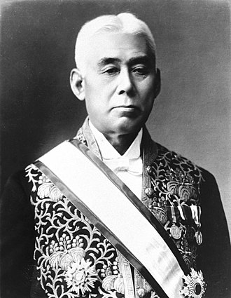
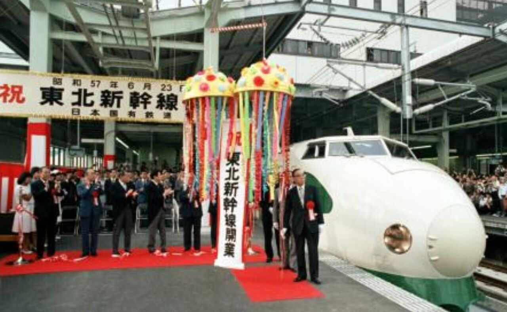

1918年(大正7年)9月27日
原敬が19代内閣総理大臣に就任。
民衆の期待は大きく、特に故郷盛岡では盛大な祝賀行事が
行われた。
1921年(大正10年)11月4日
東京駅で、原の政治姿勢に反対する19歳の青年に刺殺される。

昭和戦後期の1950年代から1960年代
山岳地帯のため交通の便が悪いことや、
主な産業が釜石製鉄所位しかなく、
所得水準が全国でも低いことから、自らを「日本のチベット」と呼んでいた。

その後、1964年（昭和39年）に花巻空港が開港、
1982年（昭和57年）に東北新幹線の大宮 - 盛岡間が開業し、
首都圏からは約3時間、仙台からも1時間圏内となり、交通の便は改善された。
1995年（平成7年）以降
当時の細川内閣が打ち出した大規模景気対策に乗って公共投資を拡大させ、その後1997年（平成9年）まで、積極投資を拡大させた。